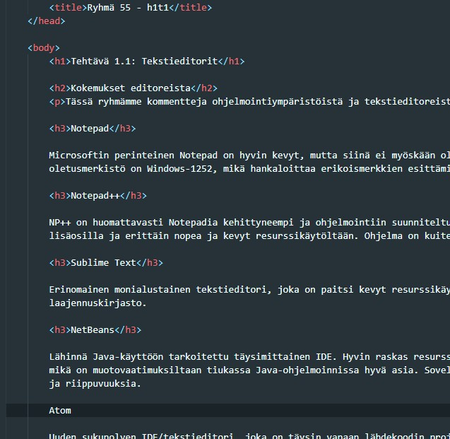

Tässä ryhmämme kommentteja ohjelmointiympäristöistä ja tekstieditoreista.
Microsoftin perinteinen Notepad on hyvin kevyt, mutta siinä ei myöskään ole mitään ohjelmointia tukevia ominaisuuksia. Lisäksi ohjelman oletusmerkistö on Windows-1252, mikä hankaloittaa erikoismerkkien esittämistä esim. Unix-pohjaisissa ympäristöissä.
NP++ on huomattavasti Notepadia kehittyneempi ja ohjelmointiin suunniteltu tekstieditori. Se on myös hyvin laajennettavissa erilaisilla lisäosilla ja erittäin nopea ja kevyt resurssikäytöltään. Ohjelma on kuitenkin käyttöliittymältään melko vanhanaikainen.
Erinomainen monialustainen tekstieditori, joka on paitsi kevyt resurssikäytöltään, myös monipuolinen ja moderni. Editorilla on laaja laajennuskirjasto.
Lähinnä Java-käyttöön tarkoitettu täysimittainen IDE. Hyvin raskas resurssikäytöltään. Sekä asettaa että vaatii koodilta tiettyä muotoa, mikä on muotovaatimuksiltaan tiukassa Java-ohjelmoinnissa hyvä asia. Soveltuu varsinkiin suurempiin projekteihin, joissa on paljon luokkia ja riippuvuuksia.
Uuden sukupolven IDE/tekstieditori, joka on täysin vapaan lähdekoodin projekti. Hyvä laajennettavuus sekä erinomainen käyttöliittymä. Huonona puolena käyttää paljon järjestelmäresursseja.
Microsoftin avoimen lähdekoodin editori/IDE. Erinomainen käytettävyydeltään ja erittäin laaja kirjasto lisäosia. Ehkä paras kokeilemistamme editoreista.
Asensimme VS Coden Windows-tietokoneelle ja asennuspaketti löytyi osoitteesta https://code.visualstudio.com/download. Asennus käytti tavanomaista Windowsin Installation Wizardia, eikä siinä tullut vaikeuksia. Emmet-lyhenteet toimivat editorissa suoraan. Esimerkiksi !-merkin jälkeen editori tarjoaa html-tiedostossa html-boilerplaten suoraan. Jos samassa html-dokumentissa esimerkiksi kirjoittaa h1*5, luo editori 5 kappaletta h1-elementtejä.
Web-serverin sai asennettua Live Server -laajennuksen avulla. Tämä tarvitsi vain hakea nimellä Extensions-välilehdeltä, asentaa ja käynnistää editori uudelleen. Serverin saa käynnistettyä ja pysäytettyä oikean hiirennapin takaa oikeantyyppisillä tiedostoilla, esim. html:llä. Uuden kursorin luonti hoituu VS Codessa pitämällä alt-näppäintä pohjassa ja klikkaamaalla jonnekin editorissa. Allekkaisia kursoreita voi luoda pitämällä pohjassa alt- ja ctrl-näppämiä ja liikkumalla nuolinäppäimillä ylös tai alas.
Tässä kuva html-tiedoston editoinnista:
